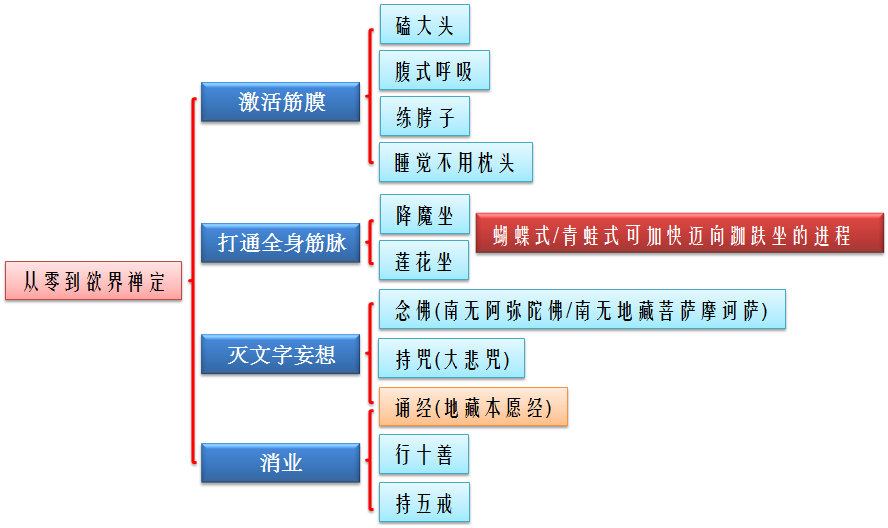

学习《占察善恶业报经》与再读《坐禅》之心得
前几天，一直在学习《占察善恶业报经》。
为什么学习它呢？原因有三：
其一，我想更有针对性消业；
其二，Taiguanglin师父在他的大作《坐禅》里曾说过：“我们说有带业往生，那得看你带多少业了。既然妄想是可数的，业也可以量化计算，往生要达到一定的标准，你才能走。这个标准不好用言词来表示，有地藏占察经，可以自己算自己的前世善恶业。”
其三，Taiguanglin师傅回韩国了，群里也没有像师傅那样的善知识能镇住场子，有很多问题即使问了，也不知道对不对，因此，有必要请一位善知识来指导自己。而通过占察经里的占察轮，地藏菩萨摩诃萨就可以在修行之路上指引我们，地藏菩萨就是我们的善知识。
在进入今天正题之前，让我们回顾一下，从零到欲界禅定，这个修行路上，我们要做的事情有哪些：

为什么要写这个心得呢？
这是因为我今天看到了Taiguanglin师父的大作《坐禅》里的一段话：“从入门开始，念地藏经，念大悲咒等——用来灭文字妄想；一有空就念佛。开始练双盘，不要着急；用三年四年打通全身筋脉进入欲界禅定……”这段话里的“一有空就念佛”，我一直也不明白灭文字妄想是什么意思、一有空就念佛究竟是什么意思(当然，也包括持咒、诵经)；直到今天，我才有了那么一点点的明了——我今天的心得要说的就是这个。
在占察经里提到，如果想要得到清净轮相，则必须要有至心。
至心有三种：
一心：所谓系想不乱，心住了了——一切杂念都没有，心里光系念地藏菩萨；
勇猛心：所谓专求不懈，不顾身命——念地藏菩萨念得不顾身命，把自己身心全放下了；
深心：与法相应，究竟不退——心跟你的拜忏跟地藏菩萨合为一体了，心即是法，法就是心，身佛合一。
为什么要提到至心呢？因为它与“一有空就念佛”这句话关系密切。具体怎么回事，看看以下的文字(摘录自《占察善恶业报经讲记》(梦参法师))：
你离开这一切干扰，一心的念地藏菩萨圣号，念的时候你心里就观想，念念从心起，念念不离心。地藏菩萨教我们要从心念，不是口，心口要一致，念的时候每一念都从你内心发出来。念念从心起，一个字、一个字清清了了，从你心起来的念，念念从心起，念念不离心，就是心念。
……
你可以把这个念地藏菩萨作为一个线，一天的这一念永远在这念地藏菩萨，吃饭时候也念，穿衣服也念，做事也念，久而成自然。我们现在的人身体没有那么健康，坚持不了，特别是睡眠盖重的人，你就假念地藏菩萨的圣号来转变你这个睡眠盖的业障。初期，第一个星期或者第二个星期你还瞌睡很多，等你能用功用到三个星期、四个星期，到五个星期以上，业障渐渐就消了，睡眠没那么多了，你功力就增强了。最初你只能念四、五个小时，过几个星期你能念八、九个小时，你功夫到了一定程度，你一天能念十几个小时以上。时间念得愈多，心里的烦恼障愈轻，烦恼障轻了，你用功的力量就增加了，那个时候你的功力就增强了，一天你能念三万声以上圣号。你念到一两个星期，你会得到感应，感觉心里头非常愉快，那就叫加持。也许梦中你见着圣相，地藏菩萨现相。
……
醒了是梦，你能用到你醒了跟梦中一样的，就说明你功夫有一定程度了，证明你现行的烦恼已经减轻了。但是你不要满足，这个时间特别注意不能生一点骄傲心，一生骄傲心就退了，立刻就退。
……
业障重了，怎么办？地藏菩萨告诉我们，你应该常勤称念，别懈怠，经常称念我的名号。不论白天昼夜的旋绕，旋绕就是围着你的房间来经行。一坐下就要睡觉，那你走。以前睡十个钟头觉的，减少八个钟头，或者减少六个钟头，或者再减少到三、四个钟头，这样来忏悔。礼忏发愿，愈修习愈生欢喜心快乐，愈修愈快乐叫乐修。完了还要供养，这四个字要联系起来，乐修供养，非常快乐供养三宝。如是者不懈怠、不废弃，甚至于失掉命都不退，要像这样来精进。
……
把这一声名号能念到一心不乱；等你念到心里头非常欢喜，把疲劳睡眠都念跑了，那就叫相应。你的心跟地藏菩萨的心相应。
从摘录的这段话当中可以看出，我有些明白“一有空就念佛”的意思了：念佛(不论是念“阿弥陀佛”，还是念“地藏菩萨摩诃萨”，亦或是持咒、诵经，皆是同理)不光是用嘴巴念，而是要用心来念：一心→勇猛心→深心，从最初的只能念四、五个小时，一直到最后的一天能念十几个小时以上——有这样的态度才能灭文字妄想。
这样的勇猛心、深心与师傅在《坐禅》里讲述他自己的故事如出一辙：“与最先修行，我是从念大悲咒入门，一天最多念800遍，最后连睡梦之间都在念大悲咒——这叫梦中一如。在不到一年的时候做了一个梦，梦见观音菩萨，和她的简单交流中大概知道了自己的来历和死后的归属。从此我心中只有一个想法，那就是回去——我踏上了漫长的修行路。”
当然，这样的功夫也不是一天两天才能得到的，需要我们有至心才能达到。